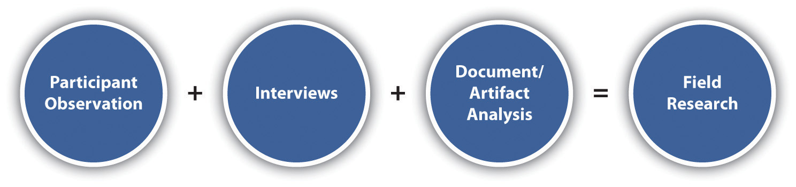

If we wanted to know who conducts more of the housework in households, how could we find the answer? One way might be to interview people and simply ask them. That is exactly what Arlie Hochschild did in her study of the second shift, her term for the work that goes on in the home after the day’s work for pay is completed. Hochschild (1989)Hochschild, A. (1989). The second shift: Working parents and the revolution at home (1st ed.). New York, NY: Viking. interviewed 50 heterosexual, married couples with children to learn about how they did, or did not, share the work of the second shift. Many of these couples reported to her that they shared the load of the second shift equally, sometimes dividing the house into areas that were “her responsibility” and those that were “his.” But Hochschild wasn’t satisfied with just people’s personal accounts of second-shift work. She chose to observe 12 of these couples in their homes as well, to see for herself just how the second shift was shared.
What Hochschild discovered was that even those couples who claimed to share the second shift did not have as equitable a division of duties as they’d professed. For example, one couple who told Hochschild during their interview that they shared the household work equally had explained that the wife was responsible for the upstairs portion of the house and the husband took responsibility for the downstairs portion. Upon conducting observations in this couple’s home, however, Hochschild discovered that the upstairs portion of the house contained all the bedrooms and bathrooms, the kitchen, the dining room, and the living room, while the downstairs included a storage space and the garage. This division of labor meant that the woman actually carried the weight of responsibility for the second shift. Without a field research component to her study, Hochschild might never have uncovered these and other truths about couples’ behaviors and sharing (or not sharing) of household duties.
There’s a New Yorker cartoon that pretty accurately portrays life for a field researcher (Cotham, 2003).Cotham, F. (2003, September 1). Two barbarians and a professor of barbarian studies. The New Yorker. Retrieved from http://www.cartoonbank.com/2003/two-barbarians-and-a-professor-of-barbarian-studies/invt/126562 It depicts “Two Barbarians and a Professor of Barbarian Studies.” As field researchers, just as in the cartoon, we immerse ourselves in the settings that we study. While the extent to which we immerse ourselves varies (note in the cartoon the professor is riding a horse but has chosen to retain his professorial jacket and pipe), what all field researchers have in common is their participation in “the field.”
Field researchA qualitative method of data collection that involves observing, interacting with, and interviewing people in their natural settings. is a qualitative method of data collection aimed at understanding, observing, and interacting with people in their natural settings. Thus when social scientists talk about being in “the field,” they’re talking about being out in the real world and involved in the everyday lives of the people they are studying. Sometimes researchers use the terms ethnography or participant observation to refer to this method of data collection; the former is most commonly used in anthropology, while the latter is used commonly in sociology. In this text, we’ll use two main terms: field research and participant observation. You might think of field research as an umbrella term that includes the myriad activities that field researchers engage in when they collect data: they participate, they observe, they usually interview some of the people they observe, and they typically analyze documents or artifacts created by the people they observe.
Figure 10.2
Field research typically involves a combination of participant observation, interviewing, and document or artifact analysis. This chapter focuses primarily on participant observation.
Because we cover interviews and document/artifact analysis in Chapter 9 "Interviews: Qualitative and Quantitative Approaches" and Chapter 11 "Unobtrusive Research: Qualitative and Quantitative Approaches", here we’ll focus only on the participation and observation aspects of field research. These aspects of field research are usually referenced together and are known as participant observationThe parts of field research that involve spending time with and watching one’s research participants; interviewing and document/artifact analysis are the other two components of field research.. Like field research, participant observation also has multiple meanings. Researchers conducting participant observation vary in the extent to which they participate or observe (Junker, 1960).Junker, B. H. (1960). Field work: An introduction to the social sciences. Chicago, IL: University of Chicago Press. You might say that there’s a continuum of participant observation, where complete observation lies at end of the continuum and complete participation lies at the other end.
In other chapters, we discuss two works that could fall on either end of the participant observation continuum. Barrie Thorne’s (1993)Thorne, B. (1993). Gender play: Girls and boys in school. New Brunswick, NJ: Rutgers University Press. observations of children in classrooms, school cafeterias, hallways, and playgrounds rest near the complete observation end of the continuum. Rather than actually pretending to be an elementary school student and interacting with her research participants as they would each other, Thorne observed (which, as discussed in Chapter 4 "Beginning a Research Project", was probably a wise move since it would have been difficult to convince the students that she was one of them). Laud Humphreys’s (1970)Humphreys, L. (1970). Tearoom trade: Impersonal sex in public places. London, UK: Duckworth. research on the tearoom trade, described in Chapter 3 "Research Ethics", could be said to rest on the other end of the continuum. Rather than only observe, Humphreys played the key tearoom role of watch queen, a role that nonresearcher participants in the trade also played. Humphreys also did not tell many of the people he observed that he was a researcher; thus from the perspectives of many of his “subjects,” he was only a participant. The participant observation continuum is represented in Figure 10.3.
There are pros and cons associated with both aspects of the participant observer’s role. Complete observers may miss important aspects of group interaction and don’t have the opportunity to fully grasp what life is like for the people they observe. At the same time, sitting back and observing may grant them opportunities to see interactions that they would miss were they more involved. Complete participation has the benefit of allowing researchers a real taste of life in the group that they study. Some argue that participation is the only way to understand what it is that we investigate. On the other hand, complete participants may find themselves in situations that they’d rather not face but cannot excuse themselves from because they’ve adopted the role of complete participant. Also, complete participants who do not reveal themselves as researchers must face the ethical quandary of possibly deceiving their “subjects.” In reality, most field research projects lie somewhere near the middle of the observer-participant continuum. Field researchers typically participate to at least some extent in their field sites, but there are also times when they may just observe. Where would you feel most comfortable as a field researcher—as an observer, a participant, or a bit of both?
As you might have imagined based on the examples of Thorne’s and Humphreys’s work, field research is well equipped to answer “how” kinds of questions. Whereas survey researchers often aim to answer “why” questions, field researchers ask how the processes they study occur, how the people they spend time with in the field interact, and how events unfold. Table 10.1 "Field Research Examples" presents just a few examples of the kinds of questions field researchers have asked in past projects along with a brief summary of where and what role those researchers took in the field. The examples presented in Table 10.1 "Field Research Examples" by no means represent an exhaustive list of the variations of questions field researchers have asked or of the range of field research projects that have been conducted over the years, but they do provide a snapshot of the kinds of work sociological field researchers engage in.
Table 10.1 Field Research Examples
| Question | Researcher role | Author (year) |
|---|---|---|
| How is the social structure of a local “slum” organized? | Over 3 years of participation and observations among an Italian community in Boston’s North End | Whyte (1942)William Foote Whyte is considered by many to be the pioneer of the use of participant observation methods in sociological studies. Whyte, W. F. (1942). Street corner society: The social structure of an Italian slum. Chicago, IL: University of Chicago Press. |
| How do the urban poor live? | Twenty months of participation and observations among an African American community in Washington, DC | Liebow (1967)Liebow, E. (1967). Tally’s corner: A study of Negro streetcorner men. Boston, MA: Little, Brown. |
| Why and how do workers consent to their own exploitation? | Ten months of participation as a machine operator in a Chicago factory along with observations of workers in the factory | Burawoy (1979)Burawoy, M. (1979). Manufacturing consent: Changes in the labor process under monopoly capitalism. Chicago, IL: University of Chicago Press. |
| How is erotic labor organized in two different countries, and what are sex workers’ experiences in each? | Brief participation in sex transactions in the Netherlands and California along with observations of and interviews with sex workers in both locations | Chapkis (1997)Chapkis, W. (1997). Live sex acts: Women performing erotic labor. New York, NY: Routledge. |
| How does childrearing differ across social classes? | Approximately one month each participating and observing in the homes and lives of 12 different families | Lareau (2003)Lareau, A. (2003). Unequal childhoods: Class, race, and family life. Berkeley: University of California Press. |
| How is masculinity constructed by and among high school students, and what does this mean for our understandings of gender and sexuality? | Eighteen months of observations and interviews in a racially diverse working-class high school | Pascoe (2007)Pascoe, C. J. (2007). Dude, you’re a fag: Masculinity and sexuality in high school. Berkeley: University of California Press. |
| How do sports play a role in shaping gender, class, family, and community? | Participation as a youth soccer volunteer along with observations and interviews | Messner (2009)Messner, M. (2009). It’s all for the kids: Gender, families, and youth sports. Berkeley: University of California Press. |
Field research is a method that was originally crafted by anthropologists for the purpose of cultural understanding and interpretation (Wolcott, 2008).Wolcott, H. F. (2008). Ethnography: A way of seeing (2nd ed.). Lanham, MD: Altamira Press. Dissatisfied with studying groups of people based solely on secondhand accounts and inspection of artifacts, several anthropologists decided to try living in or near the communities they studied to learn from and about them. Two anthropologists in particular, Franz Boas (1888)Boas, F. (1888). The central Eskimo. Washington, DC: Bureau of American Ethnology. and Bronislaw Malinowski (1922),Malinowski, B. (1922). Argonauts of the western Pacific: An account of native enterprise and adventure in the archipelagoes of Melanesian New Guinea. London, UK: G. Routledge & Sons; New York, NY: E. P. Dutton. are credited with developing this method around the turn of the 20th century. Boas lived with native populations in Canada and in the American Northwest. Malinowski lived in Papua New Guinea with people who were native to the area. Sociologists picked up on the idea and on the benefits of field research (which we’ll examine in Section 10.2 "Pros and Cons of Field Research"). Soon a number of sociologists had embraced this new method and adapted field research for their own studies of groups. Many of the early field researchers in sociology were former social workers who got interested in sociological research because of experiences in their roles as social reformers. The University of Chicago in particular played a key role in the development of American field research through, among other projects, its involvement in Hull House,Jane Addams Hull House Association. Retrieved from http://www.hullhouse.org a social settlement founded for European immigrants in Chicago (Deegan, 1986).Deegan, M. J. (1986). Jane Addams and the men of the Chicago School, 1892–1918. New Brunswick, NJ: Transaction Books.
Field research has many benefits, as well as a set of drawbacks. We’ll explore both here.
Field research allows researchers to gain firsthand experience and knowledge about the people, events, and processes that they study. No other method offers quite the same kind of closeup lens on everyday life. This close-up on everyday life means that field researchers can obtain very detailed data about people and processes, perhaps more detailed than they can obtain using any other method.
Field research is an excellent method for understanding the role of social context in shaping people’s lives and experiences. It enables a greater understanding of the intricacies and complexities of daily life. Field research may also uncover elements of people’s experiences or of group interactions of which we were not previously aware. This in particular is a unique strength of field research. With other methods, such as interviews and surveys, we certainly can’t expect a respondent to answer a question to which they do not know the answer or to provide us with information of which they are not aware. And because field research typically occurs over an extended period of time, social facts that may not even be immediately revealed to a researcher but that become discovered over time can be uncovered during the course of a field research project.
In sum, the major benefits of field research are the following:
Earlier I described the fact that field researchers are able to collect very detailed data as a benefit of this method. This benefit, however, does come at a cost. Because a field researcher’s focus is so detailed, it is by necessity also somewhat narrow. Field researchers simply are not able to gather data from as many individuals as, say, a survey researcher can reach. Indeed, field researchers generally sacrifice breadth in exchange for depth. Related to this point is the fact that field research is extremely time intensive.
Field research can also be emotionally taxing. In Chapter 9 "Interviews: Qualitative and Quantitative Approaches", I assert that interview research requires, to a certain extent, the development of a relationship between a researcher and her participants. But if interviews and field research both require relationship development, you might say that interviews are more like casual dating while field research is more like a full-blown, committed marriage.
The relationships you develop as a field researcher are sustained over a much longer period than the hour or two it might take you to conduct an interview. Not only do the relationships last longer, but they are also more intimate. A number of field researchers have documented the complexities of relationships with research participants (Arditti, Joest, Lambert-Shute, & Walker, 2010; Keinman & Copp, 1993; MacLeod, 1995).MacLeod, J. (1995). On the making of ain’t no makin’ it. In J. MacLeod (Ed.), Ain’t no makin’ it: Aspirations and attainment in a low-income neighborhood (pp. 270–302). Boulder, CO: Westview Press; Arditti, J. A., Joest, K. A., Lambert-Shute, J., & Walker, L. (2010). The role of emotions in fieldwork: A self-study of family research in a corrections setting. The Qualitative Report, 15, 1387–1414; Keinman, S., & Copp, M. A. (1993). Emotions and fieldwork. Newbury Park, CA: Sage. On the plus side, these relationships can be very rewarding (and yield the rich, detailed data noted as a strength in the preceding discussion). But, as in any relationship, field researchers experience not just the highs but also the lows of daily life and interactions. And participating in day-to-day life with one’s research subjects can result in some tricky ethical quandaries (see Chapter 3 "Research Ethics" for a discussion of some of these quandaries). It can also be a challenge if your aim is to observe as “objectively” as possible.
Finally, documentation can be challenging for field researchers. Where survey researchers have the questionnaires participants complete and interviewers have recordings, field researchers generally have only themselves to rely on for documenting what they observe. This challenge becomes immediately apparent upon entering the field. It may not be possible to take field notes as you observe, nor will you necessarily know which details to document or which will become the most important details to have noted. And when you take notes after some observation, you may not recall everything exactly as you saw it when you were there.
In sum, the weaknesses of field research include the following:
When embarking on a field research project, there are two major things to consider: where to observe and what role you’ll take in your field site. Your decision about each of these will be shaped by a number of factors, some of which you’ll have control over and others which you won’t. Your decision about where to observe and what role to play will also have consequences for the data you are able to gather and how you analyze and share those data with others. We’ll examine each of these contingencies in the following subsections.
Where you observe might be determined by your research question, but because field research often works inductively, you may not have a totally focused question before you begin your observations. In some cases, field researchers home in on a research question once they embark on data collection. Other times, they begin with a research question but remain open to the possibility that their focus may shift as they gather data. In either case, when you choose a site, there are a number of factors to consider. What do you hope to accomplish with your field research? What is your topical/substantive interest? Where are you likely to observe behavior that has something to do with that topic? How likely is it that you’ll actually have access to the locations that are of interest to you? How much time do you have to conduct your participant observations? Will your participant observations be limited to a single location, or will you observe in multiple locations?
Perhaps the best place to start as you work to identify a site or sites for your field research is to think about your limitations. One limitation that could shape where you conduct participant observation is time. Field researchers typically immerse themselves in their research sites for many months, sometimes even years. In my field research on activism in the breast cancer and antirape movements, I conducted over 300 hours of participant observation over a period of 3 years and conducted interviews with more than 60 activists (Blackstone, 2003).Blackstone, A. (2003). Racing for the cure and taking back the night: Constructing gender, politics, and public participation in women’s activist/volunteer work (Unpublished doctoral dissertation). Department of Sociology, University of Minnesota, Minneapolis, MN. And as shown in Table 10.1 "Field Research Examples", other field researchers have spent as much or even more time in the field. Do you have several years available to conduct research, or are you seeking a smaller-scale field research experience? How much time do you have to participate and observe per day? Per week? Identifying how available you’ll be in terms of time will help you determine where and what sort of research sites to choose.
Also think about where you live and whether travel is an option for you. Some field researchers actually move to live with or near their population of interest. Is this something you might consider? Is it even an option? How you answer these questions will shape how you identify your research site. Professor Erik Larson’s (2010)Larson, E. (2010). Time and the constitution of markets: Internal dynamics and external relations of stock exchanges in Fiji, Ghana, and Iceland. Economy and Society, 39, 460–487. research on variations in economic institutions in a global environment, for example, has taken him across the globe, from Fiji to Ghana to Iceland. Sociologist Sara Dorow’s (2006)Dorow, S. (2006). Transnational adoption: A cultural economy of race, gender, and kinship. New York, NY: New York University Press. research on transnational adoption took her from the United States to China. And the work of Wendy Chapkis (1997),Chapkis, W. (1997). Live sex acts: Women performing erotic labor. New York, NY: Routledge. described in Table 10.1 "Field Research Examples", required her to conduct research not only in her original home state of California but also in the Netherlands. These are just a few of many examples of sociological researchers who have traveled the globe for the purpose of collecting data. Where might your field research questions take you?
In choosing a site, also consider how your social location might limit what or where you can study. The ascribed aspects of our locations are those that are involuntary, such as our age or race or mobility. How might my ascribed status as a middle-aged woman, for example, shape my ability to conduct complete participation in a study of children’s birthday parties? The achieved aspects of our locations, on the other hand, are those that we have some choice about. In field research, we may also have some choice about whether or the extent to which we reveal the achieved aspects of our identities. There are numerous examples of field researchers whose achieved statuses granted them access to field sites into which they might not have otherwise been allowed. Jennifer Pierce (1995),Pierce, J. L. (1995). Gender trials: Emotional lives in contemporary law firms. Berkeley: University of California Press. for example, utilized her achieved status as a paralegal to gain entry into two law offices for her ethnographic study of the gendered division of labor in corporate law firms. In Lauraine Leblanc’s (1999)Leblanc, L. (1999). Pretty in punk: Girls’ gender resistance in a boys’ subculture. New Brunswick, NJ: Rutgers University Press. case, the achieved status of her appearance, including tattoos and a “punk” hairstyle and color, helped her gain the acceptance of research participants in her study of punk girls.
The preceding discussion should not be taken to mean that sociologists cannot, should not, or do not study those from whom we differ. In fact there have been plenty of successful field studies conducted by researchers who may have looked out of place in the sites they chose to investigate. Teresa Gowan, a self-described “small, white English woman” (2010, p. 16),Gowan, T. (2010). Hobos, hustlers, and backsliders: Homeless in San Francisco. Minneapolis: University of Minnesota Press. conducted field research with homeless men in some of San Francisco’s most notoriously rough neighborhoods. The aim here is not to reify the socially constructed categories upon which our society places so much emphasis in organizing itself. Rather, the point is to be aware of which ascribed and achieved aspects of your identity may shape your decisions about field sites.
Finally, in choosing a research site consider whether your research will be a collaborative project or whether you are on your own (Douglas, 1976).Douglas, J. D. (1976). Investigative social research: Individual and team field research. Beverly Hills, CA: Sage. Collaborating with others has many benefits; you can cover more ground and therefore collect more data than you can on your own. And having collaborators in any research project, but especially field research, means having others with whom to share your trials and tribulations in the field. However, collaborative research comes with its own set of challenges such as possible personality conflicts among researchers, competing commitments in terms of time and contributions to the project, and differences in methodological or theoretical perspectives (Shaffir, Marshall, & Haas, 1979).Shaffir, W., Marshall, V., & Haas, J. (1979). Competing commitments: Unanticipated problems of field research. Qualitative Sociology, 2, 56–71. If you are considering collaborative field research, you are in good company; many fascinating examples precede you. David Snow and Leon Anderson (1993)Snow, D. A., & Anderson, L. (1993). Down on their luck: A study of homeless street people. Berkeley: University of California Press. conducted a collaborative study of homelessness in Austin, Texas. And researchers at the University of Minnesota recently conducted a large-scale, cross-country field study of how forms of difference such as race and religion shape American life and experience (http://www.soc.umn.edu/research/amp.html). When considering something that is of interest to you, consider also whether you have possible collaborators. How might having collaborators shape the decisions you make about where to conduct participant observation?
I began this discussion by asking you to think about limitations that might shape your field site decisions. But it makes sense to also think about the opportunities—social, geographic, and otherwise—that your location affords. Perhaps you are already a member of an organization where you’d like to conduct research. Maybe you know someone who knows someone else who might be able to help you access a site. Perhaps you have a friend you could stay with, enabling you to conduct participant observations away from home. Choosing a site for participation is shaped by all these factors—your research question and area of interest, a few limitations, some opportunities, and sometimes a bit of being in the right place at the right time.
As with choosing a research site, some limitations and opportunities beyond your control might shape the role you take once you begin your participant observation. You’ll also need to make some deliberate decisions about how you enter the field and “who” you’ll be once you’re in.
In terms of entering the field, one of the earliest decisions you’ll need to make is whether to be overt or covert. As an overtResearcher enters the field by revealing status as a researcher; participants know they are being studied. researcher, you enter the field with research participants having some awareness about the fact that they are the subjects of social scientific research. CovertResearcher enters the field by pretending to be a participant only; participants do not know they are being studied. researchers, on the other hand, enter the field as though they are full participants, opting not to reveal that they are also researchers or that the group they’ve joined is being studied. As you might imagine, there are pros and cons to both approaches. A critical point to keep in mind is that whatever decision you make about how you enter the field will affect many of your subsequent experiences in the field.
As an overt researcher, you may experience some trouble establishing rapport at first. Having an insider at the site who can vouch for you will certainly help, but the knowledge that subjects are being “watched” will inevitably (and understandably) make some people uncomfortable and possibly cause them to behave differently than they would were they not aware of being research subjects. Because field research is typically a sustained activity that occurs over several months or years, it is likely that participants will become more comfortable with your presence over time. Overt researchers also avoid a variety of moral and ethical dilemmas that they might otherwise face. A Far Side cartoon demonstrates this point perfectly. It depicts a “researcher” dressed up like a gorilla, hanging out with a few other gorillas. In the cartoon, one of the real gorillas is holding out a few beetle grubs to the researcher, and the caption reads, “So you’re a real gorilla, are you? Well I guess you wouldn’t mind munchin’ down a few beetle grubs, would you? In fact, we wanna see you chug ’em!” (http://www.e-noah.net/asa/asashoponlineservice/ProductDetails.aspx?productID=ASAOE710N04).
As a covert researcher, “getting in” your site might be easier, but then you might face other issues. For how long would you plan to conceal your identity? How might participants respond once they discover you’ve been studying them? And how will you respond if asked to engage in activities you find unsettling or unsafe? Field researcher Richard Mitchell (1991)Mitchell, R. G., Jr. (1991). Secrecy and disclosure in fieldwork. In W. B. Shaffir and R. A. Stebbins (Eds.), Experiencing fieldwork: An inside view of qualitative research (pp. 97–108). Newbury Park, CA: Sage. was forced to consider these very questions during his covert research among right-wing survivalists when he was asked to participate in the swapping of violently racist and homophobic stories, an experience over which he later expressed profound grief and deep regret. Beyond your own personal level of comfort with deceiving participants and willingness to take risks, it is possible that the decision about whether to enter the field covertly will be made for you. If you are conducting research while associated with any federally funded agency (and even many private entities), your institutional review board (IRB) probably will have something to say about any planned deception of research subjects. Some IRBs approve deception, but others look warily upon a field researcher engaging in covert participation. The extent to which your research site is a public location, where people may not have an expectation of privacy, might also play a role in helping you decide whether covert research is a reasonable approach.
I mentioned that having an insider at your site who can vouch for you is helpful. Such insiders, with whom a researcher may have some prior connection or a closer relationship than with other site participants, are called key informantsField site insider with whom the field researcher has a closer relationship and who can provide insider knowledge about a group being observed.. A key informant can provide a framework for your observations, help “translate” what you observe, and give you important insight into a group’s culture. If possible, having more than one key informant at a site is ideal, as one informant’s perspective may vary from another’s.
Once you’ve made a decision about how to enter your field site, you’ll need to think about the role you’ll adopt while there. Aside from being overt or covert, how close will you be to participants? In the words of Fred Davis (1973),Davis, F. (1973). The Martian and the convert: Ontological polarities in social research. Urban Life, 2, 333–343. who coined these terms in reference to researchers’ roles, will you be a Martian, a Convert, or a bit of both? Davis describes the Martian role as one in which a field researcher stands back a bit, not fully immersed in the lives of his subjects, in order to better problematize, categorize, and see with the eyes of a newcomer what’s being observed. From the Martian perspective, a researcher should remain disentangled from too much engagement with participants. The Convert, on the other hand, intentionally dives right into life as a participant. From this perspective, it is through total immersion that understanding is gained. Which approach do you feel best suits you?
In the preceding section we examined how ascribed and achieved statuses might shape how or which sites you choose for your field research. They also shape the role you adopt in your field site. The fact that I am a professor, for example, is an achieved status, and I can choose the extent to which I share this aspect of my identity with field study participants. In some cases perhaps sharing that I am a professor would enhance my ability to establish rapport; in other field sites it might stifle conversation and rapport-building. As you’ve seen from the examples provided throughout this chapter, different field researchers have taken different approaches when it comes to using their social locations to help establish rapport and dealing with ascribed statuses that differ from those of their “subjects.”
Whatever role you choose, many of the points made in Chapter 9 "Interviews: Qualitative and Quantitative Approaches" about power and relationships with participants apply to field research as well. In fact, the researcher-researched relationship is even more complex in field studies, where interactions with participants last far longer than the hour or two it might take to interview someone. Moreover, the potential for exploitation on the part of the researcher is even greater in field studies as relationships are usually closer and lines between “research” and personal or off-the-record interaction may get blurred. These precautions should be seriously considered before deciding to embark upon a field research project.
Field notes are your opportunity to write poorly and get away with it. I say that in jest, but there is some truth to it. This is one type of writing where you should not be going for literary value, to make your writing interesting, and even to make it readable for anyone other than yourself. Instead, the aim is to record your observations as straightforwardly and, while in the field, as quickly as possible in a way that makes sense to you. Field notesIn field research, the official record that affirms what you observed. are the first—and a necessary—step toward developing quality analysis. They are also the record that affirms what you observed. In other words, field notes are not to be taken lightly or overlooked as unimportant.
Some say that there are two different kinds of field notes: descriptive and analytic. Though the lines between what counts as “description” and what counts as “analysis” can get pretty fuzzy, the distinction is nevertheless useful when thinking about how to write and how to interpret field notes. In this section, we’ll focus on descriptive field notes. Descriptive field notesNotes that describe a field researcher’s observations as straightforwardly as possible. are notes that simply describe a field researcher’s observations as straightforwardly as possible. These notes typically do not contain explanations of or comments about those observations. Instead, the observations are presented on their own, as clearly as possible. In the following section, we’ll examine the uses and writing of analytic field notes more closely.
Field researchers use a variety of strategies to take notes while in the field. Some research is conducted in settings where sitting with a notebook, iPad, or computer is no problem (e.g., if conducting observations in a classroom or at a meeting), but this is probably the exception rather than the norm. More often, field researchers must find creative ways to note their observations while engaged in the field. I’ve heard about field researchers jotting notes on their hands and arms, keeping very small notebooks in their pockets and occasionally jotting notes there, carrying small recorders to make quick observations, and even writing notes on toilet paper during visits to the restroom. With the advent of smartphones, taking notes in the field has become less arduous than it once was, as it is common to see someone texting or surfing the web from their phone in almost any setting.
Your strategy for recording your observations while in the field will be determined mostly by the site you choose and the role you play in that site. Will you be in a setting where having a notebook or smartphone in your hands will look out of place? If no, by all means, take notes! But don’t let your note taking distract you from what’s happening around you. Writing notes while in the field requires a fine balance between jotting down your observations and actually engaging in the setting. If you are strictly an observer, these will be easy to balance. But if you are also a participant, don’t let your note taking keep you from participating. If you do happen to be in a location where taking notes “in the moment” would be too obvious, rude, or distracting, you may still be able to occasionally jot down a few things very quickly. You may also need to develop a way of jotting down observations that doesn’t require complete sentences or perhaps even words. I know several field researchers who developed their own version of shorthand to take notes, using some combination of abbreviations and symbols, without taking too much time away from their participation in the field.
As with other proficiencies one develops, writing field notes is a skill that can be improved with practice. Recall the discussion in Chapter 1 "Introduction" about the dangers of informal observation. Conducting field research and taking field notes are decidedly not informal activities. In field research, observation is deliberate, not haphazard. That said, for a first-time field researcher, taking field notes can feel like a pretty haphazard activity. Understanding when to write, what to write, where to write, and how to write are all skills that field researchers develop with experience. I demonstrate this point to students early in our discussion of field methods by sending them out of the classroom in groups of two or three each and having them take notes about what they observe over a 15-minute period of time. No problem, they say. How hard can it be? Pretty tough, as it turns out. Students typically return from their 15 minutes of observation frustrated, confused, and annoyed with me for putting them through the experience.
So why torture my students in this way? It isn’t just to be a jerk, I promise. When students return to the classroom, I ask them to compare notes with their group members and discuss what strategies they used in making and recording observations. Typically, students have some overlap in the kinds of things noted, but inevitably one person will have paid more attention to conversations overheard, another to actions and unspoken physical expressions such how people walked or dressed, and yet another to nonhuman surroundings such as the landscape, sounds, and scents. Students conducting this exercise also often use different note-taking strategies, some drawing more pictures, others writing in complete sentences, others using abbreviations. I ask them to talk about what they’ve learned from the experience and the following two “lessons” are among the most frequently cited: (a) taking field notes is hard, and (b) it would have been nice to have some more direction before the exercise so they knew what to zero in on.
I’m always glad to hear that students recognize the difficulty of the task, and it’s true that I give them very few instructions prior to the field note exercise. This is intentional. In part I hope to make the point that while field research projects often occur inductively, this doesn’t mean that field researchers enter the field with absolutely no idea about what they plan to observe. Having a research question or topic in mind helps a researcher focus her or his observations. At the same time, it is important that field researchers not allow their original question or topic blind them to occurrences in the field that may not seem particularly important at the time. As I share with my students, you never know whether or how some observation might be important down the line. We’ll take a closer look at this point in Section 10.5 "Analysis of Field Research Data".
No matter how difficult it can be to write notes while in the field, it is worth the effort. Field researchers rely on the notes they take in the field to develop more complete notes later and, eventually, to develop analysis. Have you heard the popular philosophical question about trees falling? It goes something like this: If a tree falls in the woods but nobody hears it, did it actually make a sound? I don’t have a good answer for you from a philosophical perspective, but I can say that when it comes to field research, if you observe something but neglect to note it, it might as well not have happened. This is because you, like any other human being, cannot possibly be expected to remember everything that you see happen over the hours, days, months, or years that you spend collecting data in the field. For this reason, writing notes in the field (to the extent possible) is important, as is “filling in” those notes as soon as you are in a location where you can focus on more formal note taking. We examine this more formal aspect of note taking next.
Immediately upon leaving any observation in the field, you should take the time to complete the brief notes you took while in the field. Even if you feel that the notes you’ve taken in the field are complete, you’ll be surprised by how much more you’ll recall once you sit down without distractions and read through what you’ve jotted down. You’ll also have the opportunity to add your own reflections, or observations about your observations, when you write up more complete notes.
When you type up notes upon returning from an observation, you should “fill in the blanks” and write as much as possible about what you’ve just observed. Even if it seems mundane, I think it’s fair to say that one’s field notes can never contain too much detail. Writing as much as possible, in as much detail as possible, should also help you avoid generalizing in your field notes. Be specific about what you observe; rather than saying that “everyone” said or did something, make note of exactly who said or did X (or note that you’re not sure exactly who did so but that it seemed as if most everyone did). Rather than saying that someone you observed was “angry,” describe what gave you that impression. For example, was that person yelling, red in the face, or shaking her fist?
Don’t forget to describe exactly where you were and detail your surroundings (in addition to describing the interactions and conversations you observed and participated in). Early in a field research project you may focus slightly more on describing the “lay of the land” than you do later on. This might mean writing up very detailed descriptions of the locations you observe and the people with whom you interact. You might also draw a map or, if appropriate in your setting, take pictures of your field sites. If your observations will be conducted in the same place and with the same people, these descriptive details you write up early on will become less noticeable to you over time. It will be helpful to have some documentation of your first impressions and of the sort of details that later become so much a part of the everyday scene that you stop noticing them. The following excerpt from my own field notes comes from my first meeting with two of the key informants in my field research in the breast cancer movement.
1/14/99, 11:00am
Met Jane and Polly at the XX office today. I was scheduled to be there at 10:30 but traffic was so bad due to last night’s snow storm that I did not get there until 11:00am. Jane and Polly did not seem bothered by my tardiness (Polly, “We don’t keep a time clock around here.”). I walked into the building and took the elevator up to the second floor. I was a little unsure about where to go from there so I just walked into the first open door and said, “I’m looking for the XX office.” A woman showed me into a large office (long and slightly irregular shape with windows on one wall, a desk and table and many chairs. Also two computers set up on a counter that runs along the wall across from the windows.) Two women were looking at a computer screen that was on the counter. When I walked in I introduced myself and Jane and Polly introduced themselves to me. Both women shook my hand, though Jane was the first to do so and did so with slightly more self-assurance than Polly. Polly told me to hang my coat on one of the “coat racks” and gestured to the many chairs that were around the office. I placed my coat and purse in what I hoped would be the most out of the way location; a corner behind the table. (Blackstone, 2003)Blackstone, A. (2003). Racing for the cure and taking back the night: Constructing gender, politics, and public participation in women’s activist/volunteer work (Unpublished doctoral dissertation). Department of Sociology, University of Minnesota, Minneapolis, MN.
The description in my field notes continues for several more paragraphs, but I won’t torture you with those details. As you can see, this field notes excerpt is definitely not going to win the Pulitzer Prize for its riveting story or prose. Thankfully, that isn’t its purpose. Instead, the goal was to describe a location where I knew I’d be spending a fair amount of time and to describe my first impressions of the two women I knew would be likely candidates for key informants. One thing you’ll notice is that I used quotation marks every time I directly quoted a person. Including as many direct quotes as you can is a good idea, as such quotes provide support for the analytic points you’ll make when you later describe patterns in your data. This is another reason that taking notes in the field (to the extent possible) is a good idea. Direct quotes may be difficult to remember hours or even minutes after hearing them. For this reason you may wish to write verbatim quotes while in the field and then take the time to describe the circumstances under which something was said later on when you write up your full notes after leaving the scene.
Another thing you might find were you to read through the many pages of field notes I took during my participant observation is that I use all capital letters and brackets in some places. This is the strategy I developed for expressing my own personal feelings and impressions in my field notes. While the distinction between what one actually observed and what one thinks about what he or she observed is not always easy to make, most field researchers do attempt to distinguish between these two categories of information.
The bracketed portions of your field notes may never be used, but in some cases they will become the very early stages in your analysis of data. My notes from three years of participant observation include bracketed notes of both types. Sometimes, I used bracketed notes to express emotion or purge difficult thoughts or feelings. This was especially helpful when I felt upset about or annoyed by something that had occurred in the field. Because field research requires developing personal relationships with “subjects,” and because interpersonal relationships all experience various highs and lows, it is important to express your feelings about those relationships in your notes. Writing these more personal reflections may become important for analysis later or they may simply be cathartic at the moment. They might also reveal biases you have about the participants that you should confront and be honest about.
Every field researcher’s approach to writing up field notes will vary according to whatever strategy works best for that individual. Where I used brackets to document personal feelings and reflections on bits of data, other field researchers may use the “comments” function in a word processing program or use a different font type, size, or color to distinguish observations from reflections. Others might create two columns for their full field notes—one containing notes only about what was observed directly and the other containing reactions and impressions. There isn’t a wrong way to write field notes. What’s important is that you adopt a strategy that enables you to write accurately, to write as much detail as possible, and to distinguish observations from reflections.
Field notes are data. But moving from having pages of data to presenting findings from a field study in a way that will make sense to others requires that those data be analyzed. Analysis of field research data is the focus in this final section of the chapter.
Writing and analyzing field notes involves moving from description to analysis. In Section 10.4 "Field Notes", we considered field notes that are mostly descriptive in nature. Here we’ll consider analytic field notes. Analytic field notesNotes that include the researcher’s impressions about her or his observations. are notes that include the researcher’s impressions about his observations. Analyzing field note data is a process that occurs over time, beginning at the moment a field researcher enters the field and continuing as interactions are happening in the field, as the researcher writes up descriptive notes, and as the researcher considers what those interactions and descriptive notes mean.
Often field notes will develop from a more descriptive state to an analytic state when the field researcher exits a given observation period, messy jotted notes or recordings in hand (or in some cases, literally on hand), and sits at a computer to type up those notes into a more readable format. We’ve already noted that carefully paying attention while in the field is important; so too is what goes on immediately upon exiting the field. Field researchers typically spend several hours typing up field notes after each observation has occurred. This is often where the analysis of field research data begins. Having time outside of the field to reflect upon your thoughts about what you’ve seen and the meaning of those observations is crucial to developing analysis in field research studies.
Once the analytic field notes have been written or typed up, the field researcher can begin to look for patterns across the notes by coding the data. This will involve the iterative process of open and focused coding that is outlined in Chapter 9 "Interviews: Qualitative and Quantitative Approaches". As mentioned several times in Section 10.4 "Field Notes", it is important to note as much as you possibly can while in the field and as much as you can recall after leaving the field because you never know what might become important. Things that seem decidedly unimportant at the time may later reveal themselves to have some relevance.
In my field research experience, I was often surprised by the bits of data that turned out to hold some analytic relevance later on. For example, my field notes included a number of direct quotes and descriptions of informal interactions with participants that I didn’t expect would be important but that I nevertheless jotted down. Several of these quotes eventually made their way into my analysis. For example, Polly, who ran the volunteer office for a breast cancer organization, once remarked to me, “We [in the volunteer office] don’t use disposable cups here. It is always best to have coffee in a real mug. It’s much nicer that way” (Blackstone, 2004, p. 187).Blackstone, A. (2004). Sociability, work, and gender. Equal Opportunities International, 23, 29–44.
It didn’t occur to me at the time that this was just one of many tasks that Polly and other women volunteers do that remains largely invisible to the beneficiaries of their work. Because it is “much nicer” for volunteers to drink out of a real mug instead of a disposable cup, Polly actually spends a large amount of time washing mugs every day, and throughout the day, so that a clean, real mug is always available to the many volunteers who show up for brief volunteer shifts at the office each day. Had I not made a note of the coffee cup interaction with Polly, which at the time seemed rather mundane, I may have missed an important analytic point about the invisibility of some components of women’s volunteer labor that I was later able to make in presentations and publications of the work.
Sometimes the analytic process of field researchers and others who conduct inductive analysis is referred to as grounded theoryA systematic process in which a researcher generates new theory by inductively analyzing her or his qualitative empirical observations. (Charmaz, 2006; Glaser & Strauss, 1967).Glaser, B. G., & Strauss, A. L. (1967). The discovery of grounded theory: Strategies for qualitative research. Chicago, IL: Aldine; Charmaz, K. (2006). Constructing grounded theory: A practical guide through qualitative analysis. Thousand Oaks, CA: Sage. Grounded theory occurs, as you might imagine, from the “ground up.” It requires that one begin with an open-ended and open-minded desire to understand a social situation or setting and involves a systematic process whereby the researcher lets the data guide her rather than guiding the data by preset hypotheses. The goal when employing a grounded theory approach is, perhaps not surprisingly, to generate theory. Its name not only implies that discoveries are made from the ground up but also that theoretical developments are grounded in a researcher’s empirical observations and a group’s tangible experiences.
As exciting as it might sound to generate theory from the ground up, the experience can also be quite intimidating and anxiety-producing as the open nature of the process can sometimes feel a little out of control. Without hypotheses to guide their analysis, researchers engaged in grounded theory work may experience some feelings of frustration or angst. The good news is that the process of developing a coherent theory that is grounded in empirical observations can be quite rewarding—not only to researchers but also to their peers who can contribute to the further development of new theories through additional research and to research participants who may appreciate getting a bird’s-eye view of their everyday experiences.